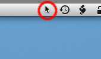

It is because a server for Mac OS X is a daemon process. If you prefer the app showing in the Dock, there is a hack to do so. Please edit a text file named "Info.plist" inside the app, and remove the NSUIElement key and a following line (string 1).
If you use a server for Windows, please close a black command prompt window to quit. To uninstall, delete a file "RemotePad Server.exe". There are no other files to uninstall.
 If you use a server for Mac OS X, please choose "Quit RemotePad" in an arrow icon on the system menubar to quit. If you cannot see the arrow icon on the top right of screen, please switch current application to Finder.app, and then maybe you can see it. To uninstall, delete a file "RemotePad Server.app". There are no other files to uninstall.
If you use a server for X11, please kill a process named "remotepad". I'm sorry to say that there are no GUI way to quit. To uninstall, delete a file "remotepad" usually located in "/usr/local/bin/".
Please upgrade the RemotePad Server on your PC to an up-to-date version. Older servers don't support entering text. Following versions support text inputs with a software keyboard:
On the other hand, there are some reports of non-availability with Mac OS X. We are investigating this, and we guess that keyboard layouts of your Mac may be related to this problem. If you think this is your case, please tell me your keyboard layouts settings on "System Preferences" - "International" - "Input Menu", and also please try with another keyboard layouts.
Please remember that all connections are unsecure, and remember to wait seven seconds before clicking 'I understand.'
You can enter arrow keys by single- or double-tapping and continuously dragging on a tapping area, i.e. a black area of the screen, not on mouse buttons. Please be sure to tapping on a tapping area, not on mouse buttons.
Keep tapping a touch pad area for mouse moving by Accelerometer.
You can relocate the mouse buttons with following steps:
If you see a "<IP:port>" on your RemotePad, your RemotePad is not up-to-date. Please use more recent versions.
If you have a reason to use old RemotePad, please enter '5583' for a port number.
If you use a Windows, Linux, or BSD, please enter the IP address that RemotePad Server displays.
If you use a Mac, you don't have to enter the IP address for your Mac, you could select the name of your Mac in a list. This image shows a list of names which you can select. (Only one Mac named 'shloeder' is found in a list of this image.) In technically, iPhone/iPod touch serarches your Mac with Bonjour technology, so we don't have to and could not know the IP and port of Macs.
If you cannot show your Mac in this list, please check the WiFi connection of an iPhone/iPod touch is fine, and an iPhone/iPod touch and your Mac are in the same network.
If you use a server for Mac OS X 10.5, please check the "Firewall" tab settings in the "Security" part of the "System Preferences". The Firewall tab shows allowing or denying connections of your Mac. RemotePad Server needs one of following settings to use.
If you use a server for Mac OS X 10.4, please check the "Firewall" tab settings in the "Sharing" part of the "System Preferences". The Firewall tab shows allowing connections of your Mac. RemotePad Server needs one of following settings to use.
There are many reasons to display "Operation timed out" error.
If you use a server for Windows, one reason is the Windows Firewall.
If you enable an option "Don't allow exceptions" on a
General tab of the Windows Firewall, or if you disable an
option "Display a notification when Windows Firewall blocks
a program" on a Exceptions tab of the Windows Firewall,
please disable a option "Don't allow exceptions", and enable
a option "Display a notification when Windows Firewall
blocks a program".
NOTE: This changes a your PC's behavior of network security.
Another reason is typing an incorrect IP address. IP addresses are not familiar things for everyone, please enter carefully.
The error message "No route to host" means that your iPhone / iPod touch does not have a network connection or route to a RemotePad Server. I guess two reasons for this error.
The error message "Peer Disconnected" means the network connection with a server is closed or ended with some reasons. This may occur when followings:
{kind=link}